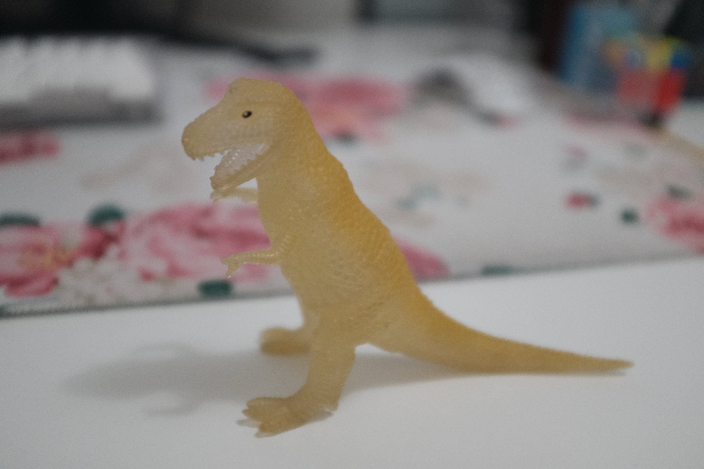
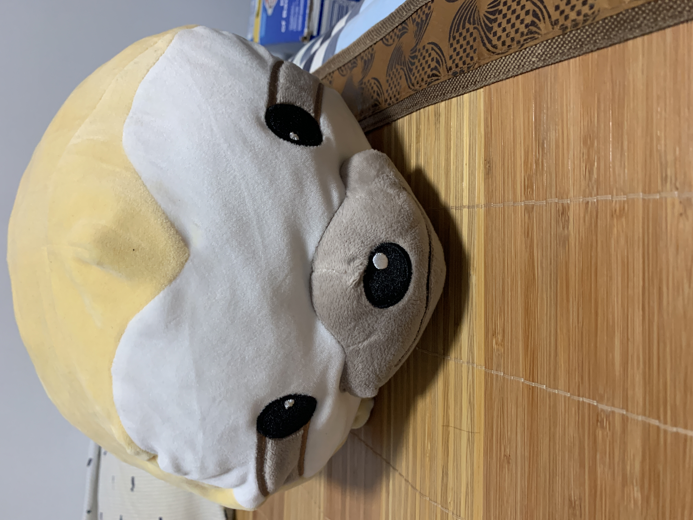

Bean

Relationship history
Best friends with Rice and Corn. The three of them hang out after school everday and play basketball together on the weekends.
Current standing
Still best friends with Rice and Corn. But Bean likes Rice a little more.
<T>

Relationship history
<T> was adopted by Ryan's parents sometime in the early 2010s from the American Museum of Natural History. Shortly after, <T> was gifted to Ryan. It has never left Ryan's room since, except for when he moved and when he brought him to Ducky Sharing Day.
Current standing
<T> no longer glows in the dark. He is currently proudly standing on top of multiple cardboard boxes.
Sloth

Relationship history
Sloth was won in a Dave & Buster's in Pennsylvania. It has made the trip back to New York City and has stayed in Hui's room ever since.
Current standing
Very squishy and clean still.